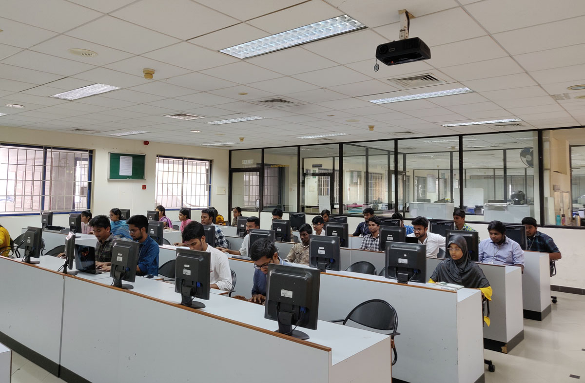
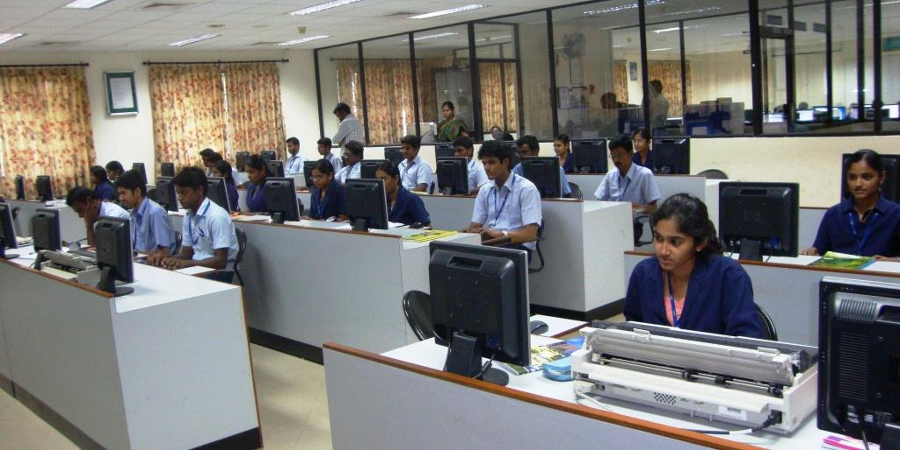
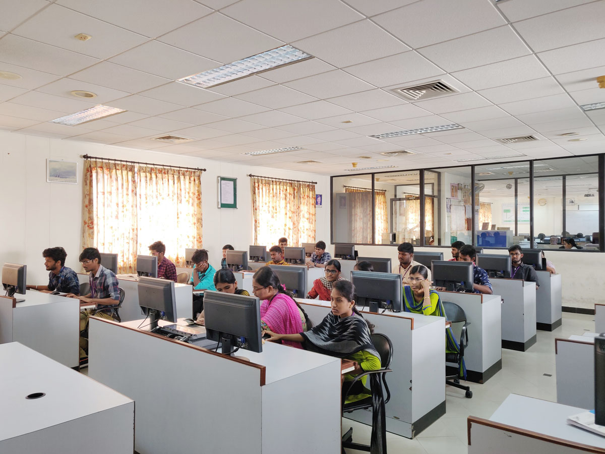

| Information Technology | Highlights | Laboratories | Faculty | Library |
|---|
The objective of system software lab is to make students familiarized with various operating systems (open source) particularly Linux and debian distributions like Fedora and ubuntu. Students are trained to work with various programming languages in Linux working environment. This lab is equipped with 38 personal computers.
In RDBMS lab, we train students to create databases, relational tables and relevant manipulations in database using MySQL (open source) in Ubuntu. This lab is equipped with 38 computer systems.
Network laboratory provides hands-on experience to various concepts studied by the undergraduate and postgraduate students related to Computer and Communication Networks. The students are trained in the laboratory to enhance their practical knowledge and to provide solutions to real time issues. Open source tools like NS2, NS3 and Wireshark are used to simulate and study the performance of various network scenarios which impart latest practical skills to students.
